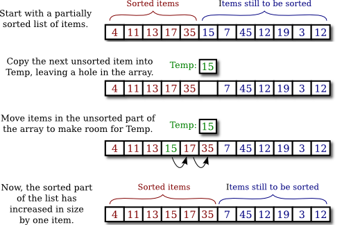

Searching and Sorting
Two array processing techniques that are particularly common are searching and sorting. Searching here refers to finding an item in the array that meets some specified criterion. Sorting refers to rearranging all the items in the array into increasing or decreasing order (where the meaning of increasing and decreasing can depend on the context). We have seen in Subsection 7.2.2 that Java has some built-in methods for searching and sorting arrays. However, a computer science student should be familiar with the algorithms that are used in those methods. In this section, you will learn some algorithms for searching and sorting.
Sorting and searching are often discussed, in a theoretical sort of way, using an array of numbers as an example. In practical situations, though, more interesting types of data are usually involved. For example, the array might be a mailing list, and each element of the array might be an object containing a name and address. Given the name of a person, you might want to look up that person's address. This is an example of searching, since you want to find the object in the array that contains the given name. It would also be useful to be able to sort the array according to various criteria. One example of sorting would be ordering the elements of the array so that the names are in alphabetical order. Another example would be to order the elements of the array according to zip code before printing a set of mailing labels.
This example can be generalized to a more abstract situation in which we have an array that contains objects, and we want to search or sort the array based on the value of one of the instance variables in the objects. In that case, we might use the terminology of "records" and "fields" that originated in work with databases, as discussed in the previous section. In the mailing list example, we might have an array of records where each record contains a first name, last name, street address, state, city, and zip code as fields. For the purpose of searching or sorting, one of the fields is designated to be the key field. Searching then means finding a record in the array that has a specified value in its key field. Sorting means moving the records around in the array so that the key fields of the record are in increasing (or decreasing) order.
In this section, most of my examples follow the tradition of using arrays of numbers. But I'll also give a few examples using objects, to remind you of the more practical applications.
Searching
There is an obvious algorithm for searching for a particular item in an array: Look at each item in the array in turn, and check whether that item is the one you are looking for. If so, the search is finished. If you look at every item without finding the one you want, then you can be sure that the item is not in the array. It's easy to write a subroutine to implement this algorithm. Let's say the array that you want to search is an array of ints. Here is a method that will search the array for a specified integer. If the integer is found, the method returns the index of the location in the array where it is found. If the integer is not in the array, the method returns the value -1 as a signal that the integer could not be found:
/**
* Searches the array A for the integer N. If N is not in the array,
* then -1 is returned. If N is in the array, then the return value is
* the first integer i that satisfies A[i] == N.
*/
static int find(int[] A, int N) {
for (int index = 0; index < A.length; index++) {
if ( A[index] == N )
return index; // N has been found at this index!
}
// If we get this far, then N has not been found
// anywhere in the array. Return a value of -1.
return -1;
}This method of searching an array by looking at each item in turn is called linear search. If nothing is known about the order of the items in the array, then there is really no better alternative algorithm. But if the elements in the array are known to be in increasing or decreasing order, then a much faster search algorithm can be used. An array in which the elements are in order is said to be sorted. Of course, it takes some work to sort an array, but if the array is to be searched many times, then the work done in sorting it can really pay off.
Binary search is a method for searching for a given item in a sorted array. Although the implementation is not trivial, the basic idea is simple: If you are searching for an item in a sorted list, then it is possible to eliminate half of the items in the list by inspecting a single item. For example, suppose that you are looking for the number 42 in a sorted array of 1000 integers. Let's assume that the array is sorted into increasing order. Suppose you check item number 500 in the array, and find that the item is 93. Since 42 is less than 93, and since the elements in the array are in increasing order, we can conclude that if 42 occurs in the array at all, then it must occur somewhere before location 500. All the locations numbered 500 or above contain values that are greater than or equal to 93. These locations can be eliminated as possible locations of the number 42.
Once we know that 42 can only be in the first half of the array, the obvious next step is to check location 250. If the number at that location is, say, -21, then you can eliminate locations before 250 and limit further search to locations between 251 and 499. The next test will limit the search to about 125 locations, and the one after that to about 62. After just 10 steps, there is only one location left. This is a whole lot better than looking through every element in the array. If there were a million items, it would still take only 20 steps for binary search to search the array! (Mathematically, the number of steps is approximately equal to the logarithm, in the base 2, of the number of items in the array.)
In order to make binary search into a Java subroutine that searches an array, A, for an item, N, we just have to keep track of the range of locations that could possibly contain N. At each step, as we eliminate possibilities, we reduce the size of this range. The basic operation is to look at the item in the middle of the range. If this item is greater than N, then the second half of the range can be eliminated. If it is less than N, then the first half of the range can be eliminated. If the number in the middle just happens to be N exactly, then the search is finished. If the size of the range decreases to zero, then the number N does not occur in the array. Here is a subroutine that implements this idea:
/**
* Searches the array A for the integer N.
* Precondition: A must be sorted into increasing order.
* Postcondition: If N is in the array, then the return value, i,
* satisfies A[i] == N. If N is not in the array, then the
* return value is -1.
*/
static int binarySearch(int[] A, int N) {
int lowestPossibleLoc = 0;
int highestPossibleLoc = A.length - 1;
while (highestPossibleLoc >= lowestPossibleLoc) {
int middle = (lowestPossibleLoc + highestPossibleLoc) / 2;
if (A[middle] == N) {
// N has been found at this index!
return middle;
}
else if (A[middle] > N) {
// eliminate locations >= middle
highestPossibleLoc = middle - 1;
}
else {
// eliminate locations <= middle
lowestPossibleLoc = middle + 1;
}
}
// At this point, highestPossibleLoc < lowestPossibleLoc,
// which means that N is known to be not in the array. Return
// a -1 to indicate that N could not be found in the array.
return -1;
}Association Lists
One particularly common application of searching is with association lists. The standard example of an association list is a dictionary. A dictionary associates definitions with words. Given a word, you can use the dictionary to look up its definition. We can think of the dictionary as being a list of pairs of the form (w,d), where w is a word and d is its definition. A general association list is a list of pairs (k,v), where k is some "key" value, and v is a value associated to that key. In general, we want to assume that no two pairs in the list have the same key. There are two basic operations on association lists: Given a key, k, find the value v associated with k, if any. And given a key, k, and a value v, add the pair (k,v) to the association list (replacing the pair, if any, that had the same key value). The two operations are usually called get and put.
Association lists are very widely used in computer science. For example, a compiler has to keep track of the location in memory associated with each variable. It can do this with an association list in which each key is a variable name and the associated value is the address of that variable in memory. Another example would be a mailing list, if we think of it as associating an address to each name on the list. As a related example, consider a phone directory that associates a phone number to each name. We'll look at a highly simplified version of this example. (This is not meant to be a realistic way to implement a phone directory!)
The items in the phone directory's association list could be objects belonging to the class:
class PhoneEntry {
String name;
String phoneNum;
}The data for a phone directory consists of an array of type PhoneEntry[] and an integer variable to keep track of how many entries are actually stored in the directory. The technique of dynamic arrays (Subsection 7.2.4) can be used in order to avoid putting an arbitrary limit on the number of entries that the phone directory can hold. A PhoneDirectory class should include instance methods that implement the "get" and "put" operations. Here is one possible simple definition of the class:
import java.util.Arrays;
/**
* A PhoneDirectory holds a list of names with a phone number for
* each name. It is possible to find the number associated with
* a given name, and to specify the phone number for a given name.
*/
public class PhoneDirectory {
/**
* An object of type PhoneEntry holds one name/number pair.
*/
private static class PhoneEntry {
String name; // The name.
String number; // The associated phone number.
}
private PhoneEntry[] data; // Array that holds the name/number pairs.
private int dataCount; // The number of pairs stored in the array.
/**
* Constructor creates an initially empty directory.
*/
public PhoneDirectory() {
data = new PhoneEntry[1];
dataCount = 0;
}
/**
* Looks for a name/number pair with a given name. If found, the index
* of the pair in the data array is returned. If no pair contains the
* given name, then the return value is -1. This private method is
* used internally in getNumber() and putNumber().
*/
private int find( String name ) {
for (int i = 0; i < dataCount; i++) {
if (data[i].name.equals(name))
return i; // The name has been found in position i.
}
return -1; // The name does not exist in the array.
}
/**
* Finds the phone number, if any, for a given name.
* @return The phone number associated with the name; if the name does
* not occur in the phone directory, then the return value is null.
*/
public String getNumber( String name ) {
int position = find(name);
if (position == -1)
return null; // There is no phone entry for the given name.
else
return data[position].number;
}
/**
* Associates a given name with a given phone number. If the name
* already exists in the phone directory, then the new number replaces
* the old one. Otherwise, a new name/number pair is added. The
* name and number should both be non-null. An IllegalArgumentException
* is thrown if this is not the case.
*/
public void putNumber( String name, String number ) {
if (name == null || number == null)
throw new IllegalArgumentException("name and number cannot be null");
int i = find(name);
if (i >= 0) {
// The name already exists, in position i in the array.
// Just replace the old number at that position with the new.
data[i].number = number;
}
else {
// Add a new name/number pair to the array. If the array is
// already full, first create a new, larger array.
if (dataCount == data.length) {
data = Arrays.copyOf( data, 2*data.length );
}
PhoneEntry newEntry = new PhoneEntry(); // Create a new pair.
newEntry.name = name;
newEntry.number = number;
data[dataCount] = newEntry; // Add the new pair to the array.
dataCount++;
}
}
} // end class PhoneDirectoryThe class defines a private instance method, find(), that uses linear search to find the position of a given name in the array of name/number pairs. The find() method is used both in the getNumber() method and in the putNumber() method. Note in particular that putNumber(name,number) has to check whether the name is in the phone directory. If so, it just changes the number in the existing entry; if not, it has to create a new phone entry and add it to the array.
This class could also have be written using an ArrayList (Section 7.3) instead of a dynamic array. And the nested PhoneEntry class is a natural candidate to be a record class (Section 7.4). For a version that uses these ideas, see PhoneDirectory2.java.
This phone directory implementation could be improved by using binary search instead of simple linear search in the find() method. However, we could only do that if the list of PhoneEntries were sorted into alphabetical order according to name. In fact, it's really not all that hard to keep the list of entries in sorted order, as you'll see in the next subsection.
I will mention that association lists are also called "maps," and Java has a standard parameterized type named Map that implements association lists for keys and values of any type. The implementation is more efficient than anything you can do with basic arrays. You will encounter this class in Section 10.3.
Insertion Sort
We've seen that there are good reasons for sorting arrays. There are many algorithms available for doing so. One of the easiest to understand is the insertion sort algorithm. This technique is also applicable to the problem of keeping a list in sorted order as you add new items to the list. Let's consider that case first:
Suppose you have a sorted list and you want to add an item to that list. If you want to make sure that the modified list is still sorted, then the item must be inserted into the right location, with all the smaller items coming before it and all the bigger items after it. This will mean moving each of the bigger items up one space to make room for the new item.
/*
* Precondition: itemsInArray is the number of items that are
* stored in A. These items must be in increasing order
* (A[0] <= A[1] <= ... <= A[itemsInArray-1]).
* The array size is at least one greater than itemsInArray.
* Postcondition: The number of items has increased by one,
* newItem has been added to the array, and all the items
* in the array are still in increasing order.
* Note: To complete the process of inserting an item in the
* array, the variable that counts the number of items
* in the array must be incremented, after calling this
* subroutine.
*/
static void insert(int[] A, int itemsInArray, int newItem) {
int loc = itemsInArray - 1; // Start at the end of the array.
/* Move items bigger than newItem up one space;
Stop when a smaller item is encountered or when the
beginning of the array (loc == 0) is reached. */
while (loc >= 0 && A[loc] > newItem) {
A[loc + 1] = A[loc]; // Bump item from A[loc] up to loc+1.
loc = loc - 1; // Go on to next location.
}
A[loc + 1] = newItem; // Put newItem in last vacated space.
}Conceptually, this could be extended to a sorting method if we were to take all the items out of an unsorted array, and then insert them back into the array one-by-one, keeping the list in sorted order as we do so. Each insertion can be done using the insert routine given above. In the actual algorithm, we don't really take all the items from the array; we just remember what part of the array has been sorted:
static void insertionSort(int[] A) {
// Sort the array A into increasing order.
int itemsSorted; // Number of items that have been sorted so far.
for (itemsSorted = 1; itemsSorted < A.length; itemsSorted++) {
// Assume that items A[0], A[1], ... A[itemsSorted-1]
// have already been sorted. Insert A[itemsSorted]
// into the sorted part of the list.
int temp = A[itemsSorted]; // The item to be inserted.
int loc = itemsSorted - 1; // Start at end of list.
while (loc >= 0 && A[loc] > temp) {
A[loc + 1] = A[loc]; // Bump item from A[loc] up to loc+1.
loc = loc - 1; // Go on to next location.
}
A[loc + 1] = temp; // Put temp in last vacated space.
}
}Here is an illustration of one stage in insertion sort. It shows what happens during one execution of the for loop in the above method, when itemsSorted is 5:

Selection Sort
Another typical sorting method uses the idea of finding the biggest item in the list and moving it to the end—which is where it belongs if the list is to be in increasing order. Once the biggest item is in its correct location, you can then apply the same idea to the remaining items. That is, find the next-biggest item, and move it into the next-to-last space, and so forth. This algorithm is called selection sort. It's easy to write:
static void selectionSort(int[] A) {
// Sort A into increasing order, using selection sort
for (int lastPlace = A.length-1; lastPlace > 0; lastPlace--) {
// Find the largest item among A[0], A[1], ...,
// A[lastPlace], and move it into position lastPlace
// by swapping it with the number that is currently
// in position lastPlace.
int maxLoc = 0; // Location of largest item seen so far.
for (int j = 1; j <= lastPlace; j++) {
if (A[j] > A[maxLoc]) {
// Since A[j] is bigger than the maximum we've seen
// so far, j is the new location of the maximum value
// we've seen so far.
maxLoc = j;
}
}
int temp = A[maxLoc]; // Swap largest item with A[lastPlace].
A[maxLoc] = A[lastPlace];
A[lastPlace] = temp;
} // end of for loop
}A variation of selection sort is used in the Hand class that was introduced in Subsection 5.4.1. (By the way, you are finally in a position to fully understand the source code for the Hand class from that section; note that it uses an ArrayList. The source file is Hand.java.)
In the Hand class, a hand of playing cards is represented by an ArrayList<Card>. The objects stored in the list are of type Card. A Card object contains instance methods getSuit() and getValue() that can be used to determine the suit and value of the card. In my sorting method, I actually create a new list and move the cards one-by-one from the old list to the new list. The cards are selected from the old list in increasing order. In the end, the new list becomes the hand and the old list is discarded. This is not the most efficient procedure, but hands of cards are so small that the inefficiency is negligible. Here is the code for sorting cards by suit:
/**
* Sorts the cards in the hand so that cards of the same suit are
* grouped together, and within a suit the cards are sorted by value.
* Note that aces are considered to have the lowest value, 1.
*/
public void sortBySuit() {
ArrayList<Card> newHand = new ArrayList<Card>();
while (hand.size() > 0) {
int pos = 0; // Position of minimal card.
Card c = hand.get(0); // Minimal card.
for (int i = 1; i < hand.size(); i++) {
Card c1 = hand.get(i);
if ( c1.getSuit() < c.getSuit() ||
(c1.getSuit() == c.getSuit() && c1.getValue() < c.getValue()) ) {
pos = i; // Update the minimal card and location.
c = c1;
}
}
hand.remove(pos); // Remove card from original hand.
newHand.add(c); // Add card to the new hand.
}
hand = newHand;
}This example illustrates the fact that comparing items in a list is not usually as simple as using the operator "<". In this case, we consider one card to be less than another if the suit of the first card is less than the suit of the second, and also if the suits are the same and the value of the second card is less than the value of the first. The second part of this test ensures that cards with the same suit will end up sorted by value.
Sorting a list of Strings raises a similar problem: the "<" operator is not defined for strings. However, the String class does define a compareTo method. If str1 and str2 are of type String, then
str1.compareTo(str2)returns an int that is 0 when str1 is equal to str2, is less than 0 when str1 precedes str2, and is greater than 0 when str1 follows str2. For example, you can test whether str1 precedes or is equal to str2 by testing
if ( str1.compareTo(str2) <= 0 )The definition of "precedes" and "follows" for strings uses what is called lexicographic ordering, which is based on the Unicode values of the characters in the strings. Lexicographic ordering is not the same as alphabetical ordering, even for strings that consist entirely of letters (because in lexicographic ordering, all the upper case letters come before all the lower case letters). However, for words consisting strictly of the 26 lower case letters in the English alphabet, lexicographic and alphabetic ordering are the same. (The same holds true if the strings consist entirely of uppercase letters.) The method str1.compareToIgnoreCase(str2) compares the two strings after converting any characters that they contain to lower case.
Insertion sort and selection sort are suitable for sorting fairly small arrays (up to a few hundred elements, say). There are more complicated sorting algorithms that are much faster than insertion sort and selection sort for large arrays, to the same degree that binary search is faster than linear search. The standard method Arrays.sort uses these fast sorting algorithms. I'll discuss one such algorithm in Chapter 9.
Unsorting
I can't resist ending this section on sorting with a related problem that is much less common, but is a bit more fun. That is the problem of putting the elements of an array into a random order. The typical case of this problem is shuffling a deck of cards. A good algorithm for shuffling is similar to selection sort, except that instead of moving the biggest item to the end of the list, an item is selected at random and moved to the end of the list. Here is a subroutine to shuffle an array of ints:
/**
* Postcondition: The items in A have been rearranged into a random order.
*/
static void shuffle(int[] A) {
for (int lastPlace = A.length-1; lastPlace > 0; lastPlace--) {
// Choose a random location from among 0,1,...,lastPlace.
int randLoc = (int)(Math.random()*(lastPlace+1));
// Swap items in locations randLoc and lastPlace.
int temp = A[randLoc];
A[randLoc] = A[lastPlace];
A[lastPlace] = temp;
}
}